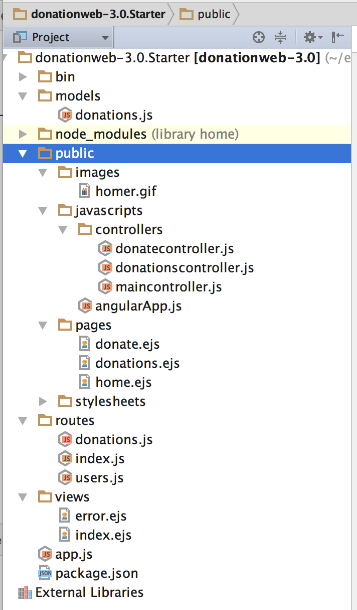
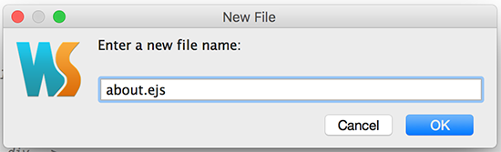
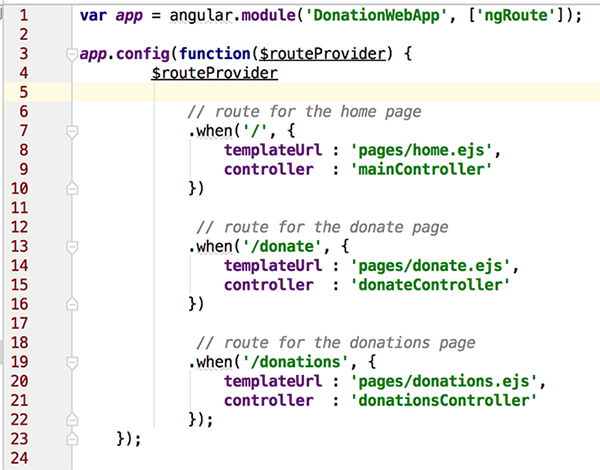

-
Lab 4 - DonationWeb 3.0 (Angular Client App)
This lab involves building your 1st Angular Web App - Donation 3.0.
To begin with, it won't actually do much, but it will give you an introduction to some of the basics of what constitutes an Angular Web App, and set up the navigation we need for all the pages in our existing Donation Web App Server.
-
Step 1 - Objectives
In this Lab, you will be required to build the next version of our Donation Case Study Web App, called DonationWeb 3.0. We will build on the previous lab (and the Case Study) and add a basic Angular front-end to our existing Web Server. In this version we will just set up the 'links' we need in our app and introduce some controllers and routes.
On completion of this lab you'll be able to
- design an initial layout for the app
- add some basic controllers to manage your pages (your views)
- implement basic navigation using the ngRoute dependency
- be able to use templates
- be able to use the ng-view and ng-controller directives
-
Step 2 - Setup
First thing you should do is download the starter code here (or continue on with your previous solution and add in the necessary files yourself!) and then extract it somewhere you can access it at the command line easily. I'd recommend creating this project in the single parent folder you have already been using for all your web app projects as we'll need to access these folders quite regularly.
It's not vital, but you should probably rename the extracted folder, and remove the 'Starter' postfix.
So, once you've extracted the archive (and opened it in WebStorm) you should have something like this.

Pay particular attention to the additional files in the 'public' folder and we'll have a closer look at the individual files as we work through the lab, but first (and to see what our Angular client currently does) you should launch your WebStorm project and view the 'new look' Angular home page in a browser.
Navigation Bar
You'll notice that the navigation bar has only 3 links, and 2 buttons, like so

displaying some basic info.
Investigate the code behind these pages and familiarise yourself with how these pages are controlled as we will build on these concepts in the rest of the lab.
The next few steps involve adding 2 new pages * About Us * Contact Us**
-
Step 3 - Implement the 'About Us' Page
This step involves adding another navigation link to our navigation bar to take the user to an 'About Us' page, like so

Updating the Navigation Bar
Adding the link is quite straightforward so open up your index.ejs page in your 'views' folder and add the following html code to the list of links
<li><a href="#about"><i class="fa fa-info"></i> About</a></li>Save the file and a quick reboot of the app should display the expected result.
Adding 'about.ejs'
We'll keep this page fairly simple for the moment so create a new file (about.ejs) within the 'pages' directory/folder of your 'public' webapp folder and place the following html inside it,
like so,

and then

<div class="jumbotron text-center"> <h1>About Us</h1> <h2>{{ message }}</h2> </div>
Wiring it all up - the 'About Us' Controller and Routing
This is where most of the work needs to be done in-so-far as we need to
- create a new controller object to manage the page and
- add a new route to ensure the link is correctly associated with the controller
Adding the Controller
First, navigate to your public/javascripts/controllers folder and add a new file aboutcontroller.js
Add the following code to the file - feel free to change the message!
var app = angular.module('DonationWebApp'); app.controller('aboutController', ['$scope', function($scope) { // create a message to display in our view $scope.message = 'Look, I\'m an About Page!'; } ]);Adding the Routing
Finally, within your angularApp.js file, navigate to where the other routes have been implemented (around line 4 if you haven't added anything before it)
like so,

Add the following code AFTER line 10 AND BEFORE line 12 (so make some space!)
// route for the about page .when('/about', { templateUrl : 'pages/about.ejs', controller : 'aboutController' })and once you've added the route

Once again, make sure you save your file before you launch it in the browser. If all goes to plan you should now be able to navigate to the 'About Us' page and see your message displayed.
But you're probably not seeing the proper message - can you work out why and how to fix it??
(Answer is next but try and solve it first, so as a hint check your index.ejs and the scripts tags :) )
-
Step 4 - Implement the 'Contact Us' Page
This step (which is virtually identical to the previous step) involves adding another navigation link to our navigation bar to take the user to a 'Contact Us' page, like so

But here's what you're missing from the previous step if your message didn't show - you need to add the following to your index.ejs
<script src="/javascripts/controllers/aboutcontroller.js"></script>
Updating the Navigation Bar
Once again, adding the link is quite straightforward so open up your index.ejs page and add the following html code to the list of links
<li><a href="#contact"><i class="fa fa-comment"></i> Contact</a></li>Save the file and a quick reboot of the page in your browser should display the expected result.
Adding 'contact.ejs'
We'll again keep this page fairly simple for the moment so follow the same steps as you did for the about.ejs.
Wiring it all up - the 'Contact Us' Controller and Routing
This is more or less the same as the previous step as well as we need to
- create a new controller object to manage the page and
- add a new route to ensure the link is correctly associated with the controller
So try and have a go at adding the controller ('contactController') and the routes without referring to the previous step.
Once again, make sure you save your file before you reboot and view in the browser. If all goes to plan you should now be able to navigate to the 'Contact Us' page and see your message displayed.
If you're totally stuck you can refer to the lecture material on Angular for a look at the solution we covered in class.
Well done - you've just built your 1st Angular Client Web App!
-
Solution
You can find the solution to this lab here.